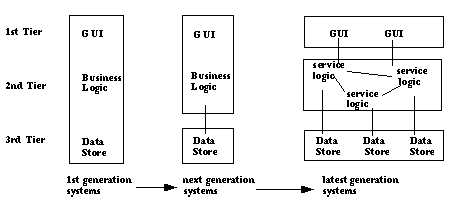

Topics discussed in this section include:
Traditional enterprise applications are, for the most part, self-contained monolithic programs which have limited access to one another's procedures and data. They are usually cumbersome to build and expensive to maintain because even simple changes require the entire program to be recompiled and retested.
By contrast, applications built using distributed objects such as CORBA naturally lend themselves to a multitiered architecture, fostering a neat separation of concerns. A three-tiered application has a user interface code layer, a computation code (or business logic) layer, and a database access layer. All interaction between the layers occurs via the interfaces that all CORBA objects must publish. The diagram below illustrates the transition from monolithic applications to multi-tiered, modular applications.
The user-interface tier is the layer of user interaction. Its focus is on efficient user interface design and accessibility throughout your organization. The user interface tier can reside on the user's desktop, on your organization's intranet, or on the World Wide Web (Internet). Several user interface implementations may be deployed which access the same server. The UI tier usually invokes methods on the business logic tier and thus acts as a client of the business logic servers.
The service, or business logic layer, is server-based code with which the client code interacts. The business logic layer is made up of business objects - CORBA objects that perform logical business functions such as inventory control, budget, sales orders, and billing. These objects invoke methods on Data Store tier objects.
The data store layer is made up of objects that encapsulate
database routines and interact directly with the DBMS product(s).
For example, a hypothetical get_Sales_Sum method might
be implemented to obtain data from a relational database via the
appropriate SQL SELECT statements.